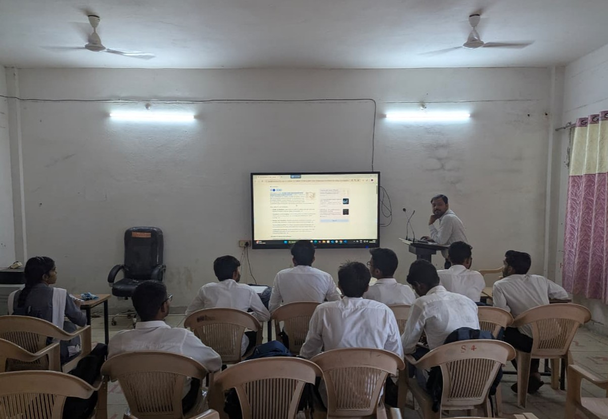

About the Department
The Computer Science and Engineering (CSE) branch at Government Polytechnic Chopan is designed to equip students with the technical knowledge, practical skills, and problem-solving abilities required in today’s digital world. The program blends core computing fundamentals with emerging technologies, ensuring that students are industry-ready and adaptable to future advancements.
Curriculum Highlights
The comprehensive curriculum covers a wide spectrum of subjects, including:
Students gain hands-on experience through well-equipped laboratories, project-based learning, and industrial training, enabling them to apply theoretical concepts in practical scenarios.
The CSE branch emphasizes innovation, creativity, and analytical thinking, encouraging students to participate in coding competitions, and collaborative projects. Additionally, the department promotes soft skills, teamwork, and professional ethics to prepare students for successful careers.
Career Opportunities: Students of the CSE program find opportunities in diverse fields, including software development, IT services, data analytics, networking, cybersecurity, and research, or may pursue higher studies to advance their expertise.
Department Laboratories

Computing & Programming Laboratory
The college has a well-equipped computer laboratory that provides students with hands-on experience and practical exposure to computing. The lab is furnished with modern computers, essential software, and all required tools to support the curriculum of diploma engineering courses. It offers a conducive learning environment where students can practice programming, learn applications, and strengthen their technical skills.

Smart Classrooms & Audio-Visual Setup
The college provides smart classrooms to make teaching and learning more effective and engaging. Equipped with modern teaching aids such as projectors, audio-visual systems, and interactive boards, these classrooms create a dynamic learning atmosphere. They help teachers explain complex topics clearly and allow students to understand concepts with visual demonstrations.
Teaching Faculty

Mr. Sanjay Khanna
HOD, Lecturer
Dr. Vivek Srivastava
Lecturer
Mr. Neeraj Dubey
Lecturer
Mr. Rizwan Ahmad
Lecturer